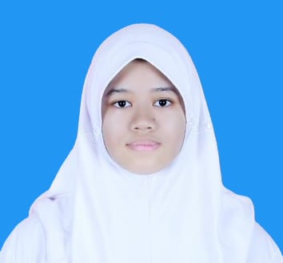

WELCOME TO MY BIODATA ^^
✨Get to know me well by exploring my profile✨
NAIRA TAHIRA | 17
Hey there! Nice of you to stop by ^^)/
I'm Naira Tahira, a Computer Engineering and Informatics student currently studying at Politeknik Negeri Bandung.
˚₊‧꒰ა ☆ ໒꒱ ‧₊˚
PERSONAL DETAILS
Name : Naira Tahira
NIM : 241511022
Class : 1A
Prodi : D3 - Teknik Informatika
Date of Birth : 4th July 2007
Place of Birth : Doha, Qatar
Religion : Islam
Address : Jalan Parang Raya No 7 Babakan Sari
Skills : Art, Music (Guitar), Programming, English Language
Goals and Dreams : Becoming a Game Dev in order to make video games for my future kids
Reasons for Choosing the Techno Unit :)
I have always been passionate about technology and problem-solving. Joining the Techno Unit allows me to grow my programming skills, collaborate with like-minded peers, and work on exciting projects that align with my future goals.
Contact Information
Email: naira.tahira9a@gmail.com
Phone: 081399635165